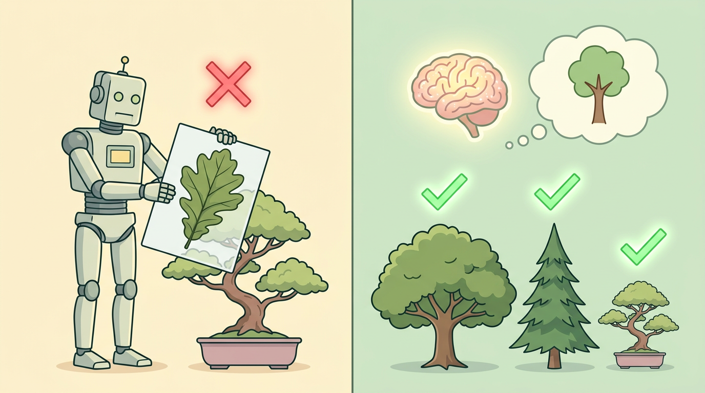
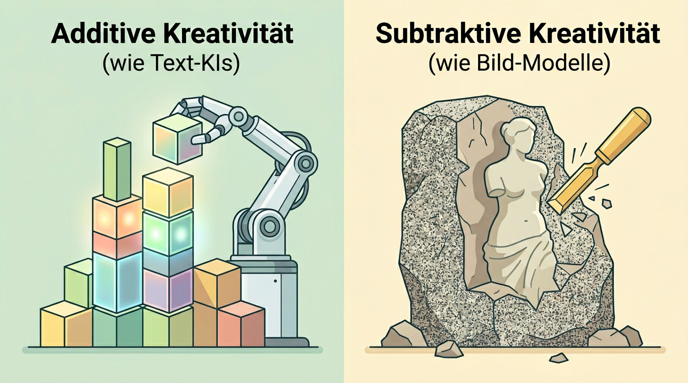
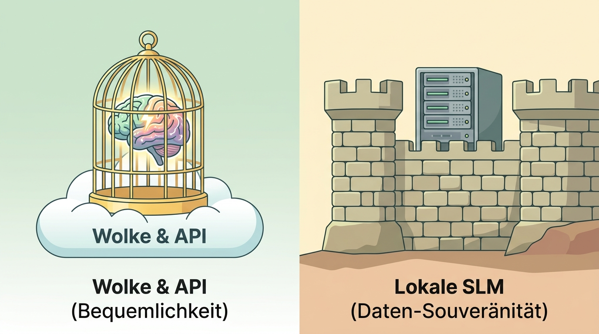
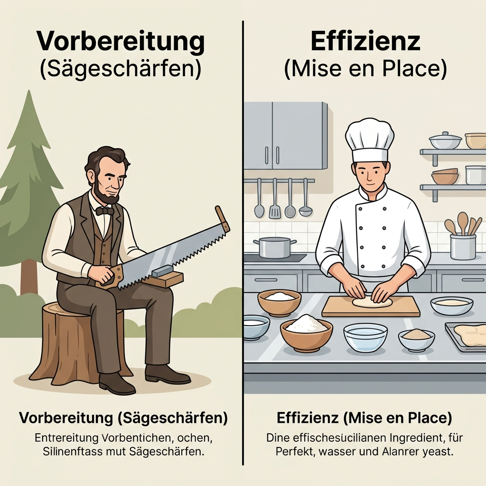

Ziel klären
Was soll am Ende verlässlich vorliegen?

WIESENPFAD-STATT-ZAUBEREI
Bei Menschen verstärken Erfahrungen Verbindungen. Bei KI werden Muster aus vielen Beispielen gelernt. Die Metapher hilft – Gleichsetzung wäre zu einfach.
EIN NÜTZLICHES, VEREINFACHTES BILD
Nervenzellen sind viel komplexer als künstliche Neuronen. Für die Grundidee genügt: Signale treffen aufeinander, Verbindungen werden unterschiedlich stark.


DAS GILT FÜR KLASSE UND KI
Ob ein Mensch oder ein Modell wirklich etwas kann, zeigt sich erst bei einer neuen Aufgabe – nicht beim Wiederholen eines bekannten Beispiels.
Sie kann Varianten, Texte, Bilder oder Code erzeugen. Aber sie hat keine eigenen Ziele, Erfahrungen oder Verantwortung.
MEHR IDEEN ≠ BESSERE IDEEN
KI kann Ideenräume vergrößern. Menschen entscheiden, was sinnvoll, fair, schön und passend zum Ziel ist.


WISSEN FINDEN, NICHT ERFINDEN
RAG sucht passende Quellen und gibt sie an ein Modell weiter. Das kann Antworten besser begründen – ersetzt aber nicht die Prüfung der Quelle.
ENTSCHEIDUNG NACH AUFGABE
Die Wahl eines Modells ist kein Glaubenskrieg. Sie hängt von Daten, Fähigkeit, Kosten, Geschwindigkeit und Kontrolle ab.


DELEGIEREN ≠ VERANTWORTUNG ABGEBEN
Ein Agent kann Informationen sammeln, strukturieren oder Entwürfe machen. Regeln, Freigaben und Folgen bleiben menschliche Aufgaben.
ILO/NASK · GLOBALER INDEX 2025
POTENZIELLE GENAI-EXPOSITION · GLOBAL
KEIN AUTOMATISCHER AUFSTIEG – ABER EIN TREND
Wenn Routinen schneller werden, gewinnen Zielklärung, Fachwissen, Qualitätskontrolle und Zusammenarbeit an Gewicht.
SKILLS-KOMPASS
ICH DELEGIERE AN KI …
„Routine, Varianten und erste Entwürfe – wenn ich sie prüfen kann.“
ICH BEHALTE BEIM MENSCHEN …
„Ziele, Werte, Beziehungen und Verantwortung für die Folgen.“
DIREKTLINK
Nutze diesen QR-Code, um die Präsentation direkt auf mobilen Geräten zu öffnen, mitzugehen oder den Foliensatz zu teilen.